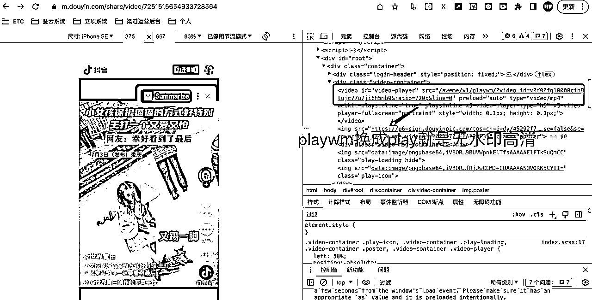
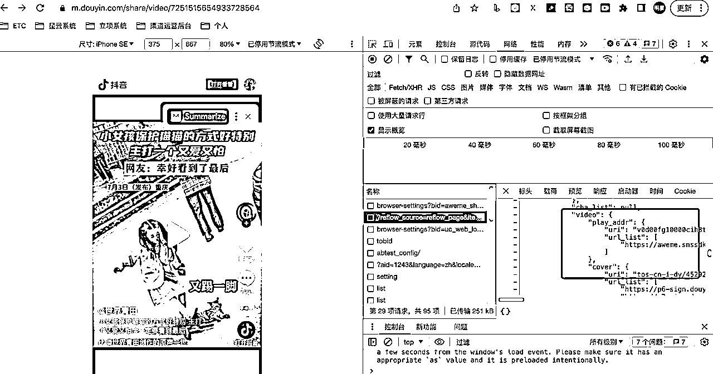
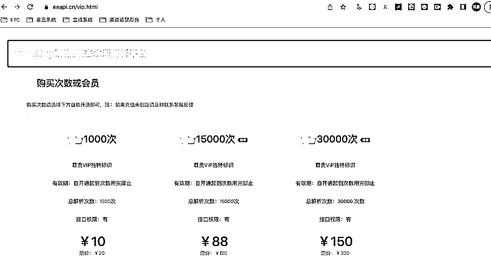

来源：https://av5n4p2l2z1.feishu.cn/docx/BXLyd4L44of3OBxIt0acBglinRb
一键下载抖音推荐页、首页、详情页无水印视频，免去看广告的烦恼。
最近看抖音，下载一些视频素材，会频繁用到下载无水印视频，以往都是微信搜个小程序直接下载了，少的时候还好，多的时候频繁的弹出广告感觉效率比较慢，心情也不是很美好......，本身做技术多年，靠着这门手艺混了这么多年，就打算自己搞一个，老看广告也挺烦了，正好也接机会练练手做一个浏览器插件。
开发之前觉得这事还是蛮简单的，无非是解决下面几个问题：
1.排查要下载的几个页面的html结构，找到视频的原始地址，找到视频信息接口
2.选择一个语言做个工具下载就ok了
python、php、golang、java、javascript
3.简单易用，方便入手
拆解完实现步骤，动手干就完事了，脚本让chatgpt辅助，我简单调整测试就ok了，实际动手的时候还真趟了几个坑，首先说问题1遇到的坑，打开浏览器调试工具配合网上查的资料，各种角度看了一下，还真找到了无水印地址和网上说到的接口，寻思也挺简单的，封装个代码直接调用就完事了，调试代码写完了发现不太行，最新的地址和相关接口后面都加了一些动态的令牌，需要逆向出js的脚本实现方式重新实现一遍才能继续这个方向(多年后端、会些前端，这几年一直做管理，逆向这块对我来说还真有点难度.......)，果断放弃了自己逆向的想法。


接下来走第二条路看看网上有没有现成的接口，google搜索了一下还真有，注册了一个平台账号看了下，基本上都按次收费的，寻思就搞这么个玩意自用，收费就先放放，其实如果要做稳定的服务，这条路是比较好的，专业的人做专业的事，自己快速上线产品就好了，灵活性更好，费用还是可以接受的(做api收费也算一个业务方向)，这里简单贴个图，有需要的可以自行搜索。

最后说说我选的方向，上面两个都没选，一个没搞定、一个没想选，索性直接解析网页加载完的dom结构吧，这里如果选择python类后端脚本，可以用无头浏览器，我这索性直接用chrome插件了，天然具备优势，可以操作页面上的dom元素，获取你想得到的任何元素，装个插件用着也方便，劣势就是单纯前端实现，功能没那么灵活，不过自用暂时是够了。
本来以为经历上面的几个对比，应该万事大吉了，实际开发的时候还是遇到了点小坑，通过插件采集到了实际的无水印视频地址，发现地址还分两种，一种https://格式的可以直接下载，一种是blob格式的，这种没办法直接下载，下载就提示报错，网上查了下也有类似的方案，比较麻烦，针对这种情况做了简单容错处理，会单独打开视频详情标签获取https协议的视频地址直接下载，经过2天奋战，算是完成了初版建设。下面贴张成品图使用非常简单，点击下载按钮就可以了：
就我本人来说，技术出身，产品、运营都还算可以，唯独需求挖掘这块比较头疼，最近没事就看生财，各种社群、站点、独立开发者，着重关注留言的问题和文章里面透漏出来的一些线索，顺着这些陆陆续续搞一些个小工具，一是为了练手，二是也可以自用，三是希望能够通过这个流程，能够慢慢延伸出一些更好创意，也欢迎圈友随时交流，沟通你日常的需求痛点，觉得不错的可以一起搞起来。
这里贴上github地址：https://github.com/niemingxing/short_video_tools